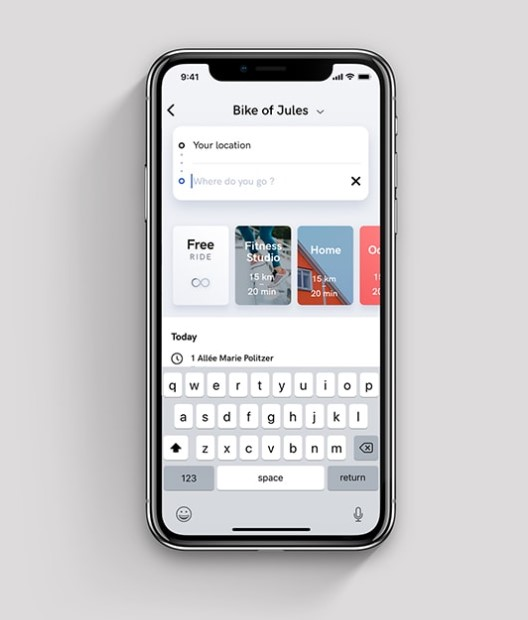
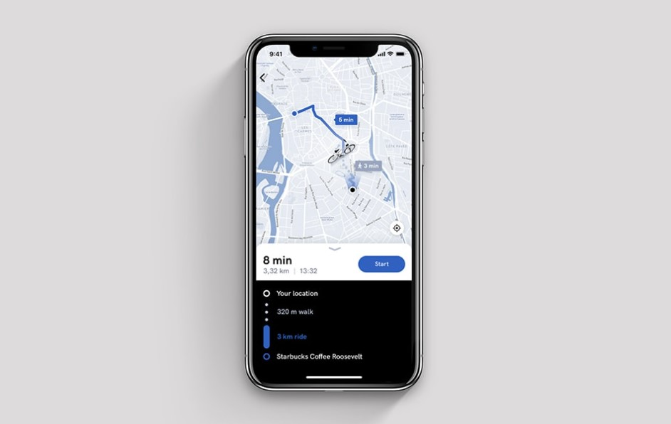
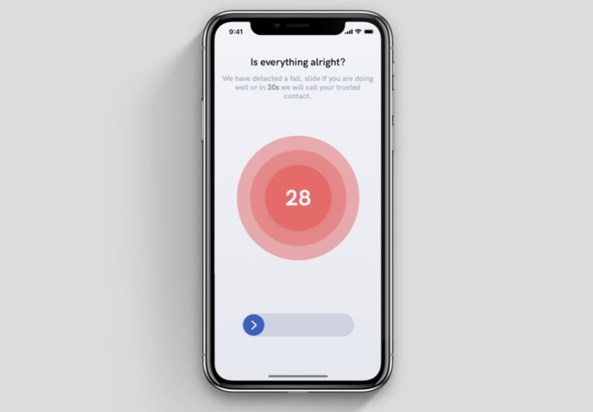
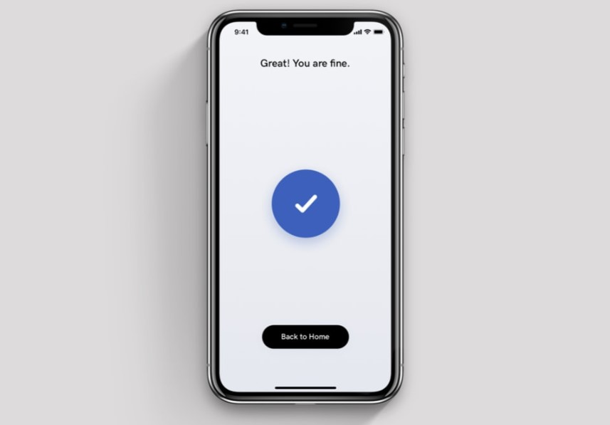

Tapez votre adresse de destination afin que l'itineraire vous soit proposé.

Vous pouvez voir votre position et votre itinéraire en temps réel.

Lorsque que le vélo detecte une chute, il demarre un timer pour s'assurer que vous allez bien. Le cas échéant, il appelle votre contact d'urgence.

Vous allez bien, nous voilà soulagés!